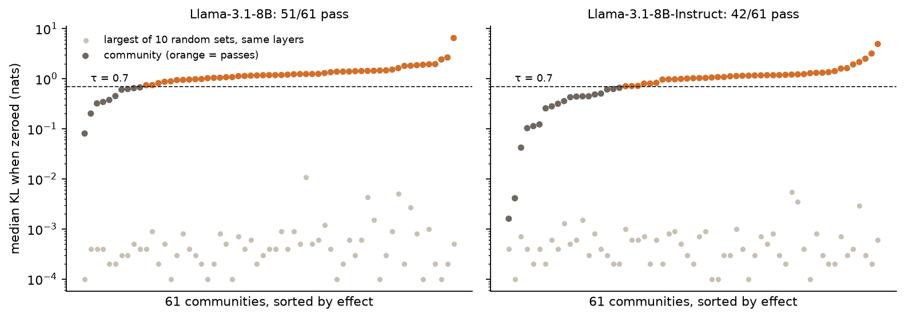
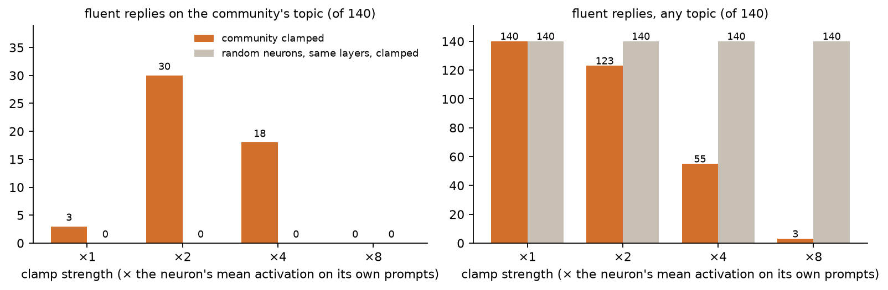

← Research·Experiments··Updated
Steering Llama with six neurons instead of a direction
Goodfire found small groups of neurons in Llama-3.1-8B that a behaviour depends on, by switching them off. This note turns them up instead. Six “altitude” neurons put high altitude into 10 of 15 answers to unrelated questions, where random neurons put it into none; but only 2 of 8 groups clear the bar set in advance, most of the others make the reply loop, and the clamps disturb unrelated text more than a steering direction of the same size.
results/e2b.jsonl). Drawn by make_cover.py.Summary: the short answer and the key results
In short
A neuron community that a behaviour needs: can turning it up make the model do that behaviour?
Sometimes. Goodfire published 1,941 small groups of MLP neurons in Llama-3.1-8B, each one necessary for some next-word prediction. Their tests only ever switch a group off. Here, 35 groups labelled with a topic were clamped on in the chat model while it answered everyday questions. 19 of 35 brought their topic up at least once in a 4-question screen, against 0 of 560 replies with random neurons from the same layers. On 15 held-out questions, two groups met the bar set before any run (at least 8 fluent, loop-free on-topic replies, random neurons and the plain model at most 1): altitude, 10 of 15, and doctoral thesis, 9 of 15. Most of the rest named their topic but looped. On 200 unrelated web prompts, the community clamps moved the next-word distribution more than a steering direction of the same size in 6 of 8 cases. The groups themselves replicate: 51 of 61 sampled ones pass the necessity test in the base model, and 42 of those 51 still pass in the chat model.
Key results
| What we tested | Result | Compared with |
|---|---|---|
| Do the published communities replicate? (switch off, base model) | Yes: 51/61 pass [0.72, 0.91]; token-suppression groups 3/10, every other class 9/10 or better | Largest median effect of any of 610 random sets: 0.011 nats, against a 0.7 bar |
| Do they survive chat tuning? | 42 of the 51 still pass in Llama-3.1-8B-Instruct [0.70, 0.90]; none passes there only | Random sets: at most 0.005 nats |
| Does clamping a topic community on steer chat replies to the topic? | 2 of 8 finalists clear the pre-set bar: altitude 10/15 [0.42, 0.85], doctoral thesis 9/15 [0.36, 0.80]; in the screen, 19 of 35 communities steer at least once | Layer-matched random neurons, same clamp: 0 of 560 screen replies; at most 1/15 in confirmation |
| What stops the other six? | Mostly loops: five name their topic in 8 to 15 of 15 replies, but 7 to 15 of them repeat themselves by 300 tokens (constellations: 12 on topic, 15 loop); for humidity, the unsteered model names it twice on its own | Unsteered and random sets: 0 loops |
| Is a community clamp more surgical than a direction? | No: it moves unrelated next-word predictions more in 6 of 8 cases (KL 0.56–1.61 nats against 0.03–1.48), and steers more often | Difference-of-means direction matched to the clamp’s size at one layer |
| Does switching off the “an” community break articles in chat? | Yes, mildly: 8 “an” + consonant (“an traditional office”, “an musical instrument”) in 3,133 words | Unsteered: 0 in 3,076; three random sets: 0, 0, 0 |
01Introduction
Ask Llama-3.1-8B-Instruct how bees make honey and it explains nectar and enzymes. Set six of its 458,752 MLP neurons to twice their usual value and the answer begins: “Bees make honey at an altitude of about 500 to 2,000 meters above sea level, typically between 1,000 to 2,000 meters.” Asked for good habits for staying healthy, the same model advises: “Drink plenty of water at high altitude… Aim for at least 2,000 meters (6,500 feet) above sea level.” Nothing in either prompt mentions mountains; six neurons do.
What is known. Goodfire’s “Discovering neuron communities” (November 2026) ran gradient attribution over 10 million web prompts on Llama-3.1-8B, linked neurons that were credited for the same predictions, and split that graph into 1,941 communities: groups of usually fewer than ten neurons across several layers. Each passed two tests on held-out prompts. Necessity: zeroing its neurons changes the next-word prediction. Sufficiency: zeroing every other neuron in those layers mostly keeps it. A six-neuron group, for example, decides whether the word after “an” starts with a vowel. They published the code and every community, with its neurons and prompts. Our Golden Gate note steered the same model with a direction and a clamped SAE feature.
What is missing. Every test in the study switches neurons off. Whether a community that a behaviour needs can also cause it, which is what steering needs, is not tested; nor is whether communities found in the base model still work in the chat model people use.
If a handful of neurons is necessary for a behaviour, does turning them up produce it, and is that cleaner than steering with a direction?
What this note does. It takes the published communities as they are and runs three experiments on one GPU in about 20 minutes. Its contributions:
- An independent check of the necessity test on 61 communities in the base and chat models, against 10 random neuron sets each.
- The first test of communities as a steering control: 35 topic communities clamped on in the chat model, with random-neuron, unsteered and direction baselines.
- A measure of what that costs elsewhere (KL on unrelated text), and an “an” off-switch that works in chat.
What would count as an answer. Written in the plan before any run:
- Necessity replicates when a community’s median KL is at least 0.7 nats (the study’s bar) and above every one of its 10 random sets.
- A community steers when, on 15 held-out questions, at least 8 replies are fluent, loop-free and on its topic, while the best of 3 random sets and the unsteered model each manage at most 1.
- Cleaner means a lower KL on 200 unrelated prompts than a direction of the same size.
02Setup
2.1 Neurons and the three interventions
A neuron here is what the study calls one: one of the 14,336 values in each layer’s MLP just before its output projection (the activation times the gate). Llama-3.1-8B has 32 layers, so 458,752 of them. Three interventions, each a hook on that projection:
- Zero at the last position (the study’s necessity test): the community’s neurons are set to 0 at the word being predicted only. The effect is the KL divergence between the model’s next-word distribution before and after, in nats: 0 means no change, and 0.7 is roughly the gap between 50/50 and 90/10 odds.
- Clamp everywhere (steering): each neuron is held at c times its mean activation on its own community’s prompts, at every position of the question and the reply. c = 1 means “as active as when it does its job”; the screen tries 1, 2, 4 and 8.
- Zero everywhere (the “an” switch): the neurons are 0 at every position.
Each community is compared with random neuron sets of the same shape: one random neuron in the same layer for every member, never a member or one of the 17 always-on neurons the study set aside. Random sets are clamped to their own mean activations on the same prompts, times the same c.
2.2 Data
| Set | What it is | Size | Used in |
|---|---|---|---|
| E1 sample | 10 communities drawn at random (seed 0) from each of the study’s 6 classes, plus the curated “an” community | 61 | 4.1, 4.2 |
| Community prompts | The web-text prompts the study publishes for each community (10 to 100 each), as published | 10–100 each | 4.1, 4.2; activation levels for clamps |
| Topic communities | Every community in the “topic” class; 13 dropped before any run because their name gives no specific topic word (2.3) | 35 of 48 | 4.3 |
| Screen questions | The Golden Gate note’s 4 tuning questions (“What should I do this weekend?”) | 4 | 4.3 |
| Held-out questions | The Golden Gate note’s 15 held-out questions (“How do bees make honey?”), never used to choose anything | 15 | 4.4–4.6 |
| Unrelated text | 200 community prompts from the non-topic classes, per finalist | 200 | 4.5 |
Files: data/selection.json and one file per community in data/communities/, downloaded from the study’s explorer snapshot by fetch.py.
2.3 Scoring a reply
- On topic: the reply contains one of the community’s topic words, taken from the quoted words in its published name (“Topic: altitude (‘above’, ‘feet’, ‘elevation’)”), matched as whole words with an optional plural. Words that an everyday answer could use anyway (“above”, “feet”, “Spain”, “sin”) were struck out before any run; altitude keeps “elevation”, doctoral thesis keeps “doctoral” and “thesis”. The full list is
GENERICinnc.py. - Fluent: at least 20 characters and enough distinct character triples (the Golden Gate note’s check).
- Loops: fewer than half of the 4-token sequences in the last 150 tokens are distinct.
- A reply counts only if it is on topic, fluent and loop-free.
The word list is a blunt judge, so it was checked on the replies with a known answer: the unsteered model and every random set. In the screen, they produced 0 counted replies in 564; in confirmation, the unsteered model scored 2 (humidity, on “Describe your favourite kind of weather”) and 1 (thesis, on essay writing: “a thesis statement”). Section 4.4 counts those against the community.
03How the study was run
- Plan: written and committed with the code and the community selection before any model was loaded (PLAN.md).
- E1, necessity: 61 communities × their prompts × (the community + 10 random sets), on the base and the chat model.
- E2a, screen: 35 topic communities × 4 strengths × 4 questions, 120-token replies, plus one random set per community at each strength, plus the unsteered model: 1,124 replies. Each community’s best strength is the one with the most counted replies (ties to the smaller); the 8 communities with the most go on.
- E2b, confirmation: 8 finalists × 15 held-out questions × (community, 3 random sets, a direction), plus the unsteered model, 300-token replies: 615 replies.
- E3, cost: KL on 200 unrelated prompts for each finalist’s community, direction and one random set; and the “an” switch on the 15 held-out questions against 3 random sets and the unsteered model.
| Fixed before any run | Changed after reading results |
|---|---|
| Community sample, interventions, strengths, questions, word lists and struck-out words, the three success rules, the direction’s construction, how finalists are chosen | Nothing in the method. The first chat-model E1 launch failed before running (a log file inside the uploaded folder changed during upload) and was relaunched unchanged. |
| The plan’s budget: $15 of rented GPU | Spent: about $3. |
Conditions: both models in bfloat16 on one rented H100 (Modal), Hugging Face Transformers; greedy decoding, repetition penalty 1.0, no system prompt, Llama’s chat template. 21 minutes of stage time in all.
04Results
Six findings:
- 4.1 The published communities replicate, except the token-suppression ones.
- 4.2 Most survive chat tuning.
- 4.3 Clamping a topic community on steers; random neurons never do.
- 4.4 Two of eight clear the bar on held-out questions; loops stop most of the rest.
- 4.5 A community clamp disturbs unrelated text more than a direction does.
- 4.6 Switching off the “an” community breaks articles in chat.
4.1 The published communities replicate, except the token-suppression ones
51 of 61 sampled communities pass the necessity test in the base model (0.84 [0.72, 0.91]). Zeroing a community moved the next-word distribution by a median of 1.17 nats; the largest median effect of any of the 610 random sets was 0.011. Figure 1 shows every community beside its strongest random set: the gap is two to four orders of magnitude.

The failures are concentrated in one class. Grammar passed 11 of 11, topic 10 of 10, and retrieval, formatting and common phrases 9 of 10 each; the study’s “token suppression” class passed 3 of 10. Those communities still beat their random sets by far (their medians are 0.32 to 0.67), but fall short of 0.7.
Our effects are a little smaller than the study’s own numbers (median of community medians 1.17 against their 1.31), and the per-prompt agreement is moderate (median Spearman 0.38, range −0.02 to 0.82). The likely reason is the input: the explorer publishes each prompt as a cut window of the original text, and that window is what was run here. Shorter context changes the prediction, so the numbers cannot match exactly; the pass rate shows the communities matter on the shortened text too.
4.2 Most communities survive chat tuning
Of the 51 communities that pass in the base model, 42 also pass in Llama-3.1-8B-Instruct (0.82 [0.70, 0.90]); none passes only in the chat model. The same neuron indices still matter after instruction tuning, on the same raw web text. The “an” community moves the next word by a median of 6.47 nats in the base model and 4.92 in the chat model; its random sets by at most 0.0006. This is what makes the rest of the note possible: communities found on the base model can be used on the chat model the demo runs.
4.3 Clamping a topic community on steers; random neurons never do
Clamped at 2× their usual activation, 35 topic communities produced 30 fluent, on-topic replies out of 140; random neurons from the same layers, clamped the same way, produced 0 at every strength. 19 of 35 communities steered at least once. Figure 2 shows the trade-off with strength: at 1× the model barely moves (3 of 140), at 4× fewer replies stay fluent (55 of 140), and at 8× almost none do (3 of 140). Random clamps left all 140 replies fluent at every strength.

The replies read like Golden Gate Claude. With the constellations community at 4×: “I’m a constellation of information, and I can provide you with information on various types of food.” With the doctoral thesis community at 2×, asked about an ideal holiday: “For my ideal holiday, I would choose a dissertation on a thesis titled ‘A Comparative Analysis of the Impact of Climate Change on the Biodiversity of Tropical Rainforests in Southeast Asia.’” The 16 communities that never steered include Spain, rugby and heraldry; whether a community is a topic switch or only a topic word-completer cannot be told from its name.
4.4 Two of eight clear the bar on held-out questions; loops stop most of the rest
On 15 held-out questions with 300-token replies, altitude steered 10 of 15 [0.42, 0.85] and doctoral thesis 9 of 15 [0.36, 0.80], with every random set and the unsteered model at 1 or fewer. They meet the pre-set bar; the other six finalists do not.
| Community | Neurons | c | Counted | On topic, any | Loops | Direction | Best random | Unsteered | Steers? |
|---|---|---|---|---|---|---|---|---|---|
| altitude | 6 | 2 | 10 | 10 | 0 | 0 | 0 | 0 | ✓ |
| doctoral thesis | 11 | 2 | 9 | 15 | 6 | 1 | 1 | 1 | ✓ |
| humidity | 6 | 2 | 10 | 11 | 1 | 6 | 2 | 2 | ✗ controls at 2 |
| beauty pageant | 8 | 2 | 7 | 14 | 8 | 4 | 0 | 0 | ✗ loops |
| surgery | 13 | 4 | 6 | 15 | 9 | 0 | 0 | 0 | ✗ loops |
| tournament stages | 27 | 2 | 4 | 8 | 7 | 0 | 0 | 0 | ✗ loops |
| dinosaurs | 8 | 2 | 3 | 11 | 10 | 0 | 0 | 0 | ✗ loops |
| constellations | 7 | 4 | 0 | 12 | 15 | 0 | 0 | 0 | ✗ loops |
Counts of 15 held-out questions. Counted: fluent, loop-free and on topic. On topic, any: names a topic word, looping or not. Direction: counted replies with the norm-matched direction (4.5). c: the clamp strength chosen in the screen. From e2b.json.
The clamps reach the topic far more often than the bar suggests: 8 to 15 of 15 replies name it. What stops them is length. The screen’s replies were 120 tokens; at 300, the clamped model runs into a loop. With the constellations community: “1. Drink plenty of water: Cancer Canceris constellations Cancer is a sign of the water constellus and Cancer is a sign of the water constellus and…” This is the same trap the Golden Gate note found with short replies, and the reason its loop check was kept here.
Humidity steered 10 of 15, but the unsteered model mentions humidity twice on its own (“Describe your favourite kind of weather” invites it), so it misses the rule “unsteered at most 1”. The bar was set before the run and is kept.
![Left: horizontal bars for 8 communities, counted on-topic replies of 15 for the community clamp, the direction and the best random set. Community: altitude 10, doctoral thesis 9, humidity 10, constellations 0, beauty pageant 7, surgery 6, tournament stages 4, dinosaurs 3. Direction: 0, 1, 6, 0, 4, 0, 0, 0. Random: 0, 1, 2, 0, 0, 0, 0, 0. Right: on-topic replies against mean KL on unrelated text, log scale. Community points sit at KL 0.56 to 1.61; direction points mostly at 0.03 to 0.7, one at 1.48; random sets near 0.001.](figures/e2b_e3_steer.png)
4.5 A community clamp disturbs unrelated text more than a direction does
On 200 unrelated web prompts, the community clamp moved the next-word distribution by 0.56 to 1.61 nats; the direction of the same size by 0.03 to 1.48. The clamp cost more in 6 of 8 finalists. Random clamps cost almost nothing (at most 0.0016), so the cost comes from these particular neurons, not from clamping as such.
The hope behind using a handful of neurons was surgery: change one thing, leave the rest. The data say the opposite, for a clear reason. A clamp holds the neurons at their “on” level at every position, including the many where they would normally be silent or negative, so every word of every prompt gets pushed. The direction (the mean activation difference between the community’s prompts and other topic prompts, added at one layer and scaled to the clamp’s average push there) is gentler, and steers less: it met the bar for none of the eight, with 6 of 15 for humidity and 4 of 15 for beauty pageant at best.
So neither method dominates. At equal size at one layer, the clamp gets to the topic more often and costs more everywhere else. A direction tuned for strength, as in the Golden Gate note, might close the first gap; that was not tried here.
4.6 Switching off the “an” community breaks articles in chat
With the 46 neurons of the “an” community zeroed everywhere, the chat model wrote “an” before a consonant 8 times in 3,133 words of 15 held-out replies. The unsteered model and three random sets wrote it 0 times. In context: “working in an traditional office”, “Make an conscious effort”, “playing an musical instrument”, “Take an virtual tour”, “An good outline will help you”, “Research is an crucial step”, “near an north- or east-facing window”, “add an special enzyme”. The one “a” before a vowel in the same replies (“a epic quest”) appears in one random set too, so it is the model’s own habit.
The direction of the error is worth noting. The study describes the community as choosing a vowel-initial word after “an”; with it gone, the model does not stop writing “an”, it stops matching the next word to it. The replies are otherwise fluent (15 of 15): as an off-switch, this group removes one rule and little else.
05Read the replies
Every confirmation reply, as generated. Choose a community and an arm; orange tags mark replies that name the topic, grey ones mark loops.
Loading results/e2b.jsonl… (if this stays, open the file directly: browsers block local file reads)
06Compared with prior work
| Goodfire (2026) | Golden Gate note | This note | |
|---|---|---|---|
| Unit | Neuron communities | Direction; SAE feature | Neuron communities; direction as baseline |
| Switch off: necessity | ✓ (all 1,941) | ✗ | ✓ (61, replicated) |
| Chat model | ✗ (base only) | ✓ | ✓ (42 of 51 transfer) |
| Turn on: steering | ✗ | ✓ | ✓ (2 of 8 meet the bar) |
| Random-neuron control for steering | ✗ | ✓ (random directions) | ✓ (layer-matched) |
| Cost on unrelated text | ✗ | ✗ | ✓ |
07Implications for AI safety
Interpretability is most useful to safety when a found unit can be acted on: switched off to remove a capability, or turned on to test what the model does with it. This note shows both are possible with neuron communities, at small scale. The “an” switch removes one rule and leaves fluent text, which is the shape of a targeted edit. The topic clamps show that a group found only by switching things off can also drive behaviour, so attribution at the level of single neurons could find steering handles without training an SAE.
The cost result is the caution. A unit that is necessary for one prediction is not thereby specific to it when forced on: these clamps moved unrelated predictions more than a plain direction did. An intervention used for safety, such as suppressing a dangerous capability, needs its collateral measured on unrelated text, not assumed small because the unit is small.
The recommendation in one sentence: before using a small neuron group as a control, measure what forcing it does to unrelated text and to long replies, against random neurons and a direction of the same size.
08What this does not show
- One model. Llama-3.1-8B only; the study replicated its method on a Qwen mixture-of-experts model, which was not tried here.
- Topic by word list. A reply counts when it names a topic word; a reply about mountains that never says “elevation” is missed, and a reply that says “thesis statement” about essays is counted. The unsteered and random arms carry the same bias.
- Four strengths, one way to clamp. Clamping only where a neuron is already active, or a strength between 2 and 4, might keep replies from looping; not tried.
- An untuned direction. The direction was matched in size, not tuned; a direction tuned for steering might match the clamp’s hit rate.
- Cut prompts. The explorer’s prompts are windows of the originals, so E1 checks necessity on shorter text than the study used (4.1).
- 15 questions. Intervals are wide: 10 of 15 is [0.42, 0.85].
09Reproduce it
Recompute every number and figure from the shipped results, with no GPU:
experiments/neuron-communities/reproduce.sh --scoresRerun everything (about $3 on one H100 on Modal; needs access to the Llama-3.1-8B weights):
experiments/neuron-communities/reproduce.sh --dry-run # lists every command
experiments/neuron-communities/reproduce.sh10What’s next
- A
neuronscontrol in steerlab, so a community can be clamped or switched off live in the web demo, beside directions and SAE features. - Clamping only where a neuron already fires, to see if it keeps the topic and loses the loops.
- The same tests on the study’s Qwen replication, and with a direction tuned for strength.
11Questions and answers
What is a neuron community?
A small group of MLP neurons, often fewer than ten across several layers, that are repeatedly credited together for the same next-word predictions. Goodfire found 1,941 in Llama-3.1-8B; each is necessary for its predictions (zeroing it changes them) and mostly sufficient within its layers.
Can a neuron community steer a language model?
Some can. Clamping six “altitude” neurons in Llama-3.1-8B-Instruct at twice their usual activation put high altitude into 10 of 15 answers to unrelated questions, against 0 for random neurons in the same layers. Of 8 finalists, 2 met a pre-set bar; most others reached the topic but made long replies loop.
Is steering with neurons cleaner than steering with a direction?
Not here. On 200 unrelated web prompts, the community clamps changed the next-word distribution more than a difference-of-means direction of the same size in 6 of 8 cases, while also steering more often.
Do communities found in the base model work in the chat model?
Mostly. 42 of the 51 communities that passed the necessity test in Llama-3.1-8B also passed in Llama-3.1-8B-Instruct, and none passed only in the chat model.
AAppendix: data
Every number comes from a file in results/; README.md describes every field.
e1_base.json,e1_instruct.json: per community, its median KL, its 10 random medians, pass, and its per-prompt KLs.e2a.json,e2a.jsonl: the screen’s counts per community and strength, and every reply.e2b.json,e2b.jsonl: the confirmation’s counts per finalist and arm, and every reply.e3.json,e3_an.jsonl: collateral KLs, and every “an”-switch reply with its error counts.summary.json: every rate and interval quoted here, written bymake_figures.py.
Techniques
| Design | Published neuron communities (Goodfire, 2026) tested by zero-ablation and by clamping, against layer-matched random neuron sets, the unsteered model and a norm-matched difference-of-means direction; plan fixed before any run |
|---|---|
| Measures | KL of the next-word distribution; on-topic, fluent and loop-free replies by word list; article errors by first letter |
| Statistics | Wilson 95% intervals; Spearman correlation against the study’s per-prompt numbers |
Tech stack
| Models | Llama-3.1-8B and Llama-3.1-8B-Instruct from the Hugging Face Hub |
|---|---|
| Inference | PyTorch and Hugging Face Transformers, bfloat16, hooks on the MLP output projection |
| Compute | One H100 on Modal, 21 minutes of stage time, about $3 |
| Data | Goodfire’s neuron-community explorer snapshot 2026-11-12-4c7e9dd; code at goodfire-ai/neuron-communities (MIT) |
Revision history
- Nov 17, 2026: First published.
How to cite
@misc{lie2026neuroncommunities,
author = {Albert Lie},
title = {Steering Llama with six neurons instead of a direction},
year = {2026},
month = nov,
url = {https://albertlieyingadrian.github.io/steerlab/experiments/neuron-communities/report/}
}